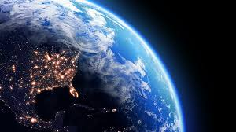
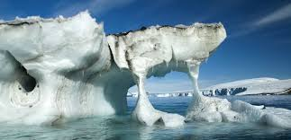
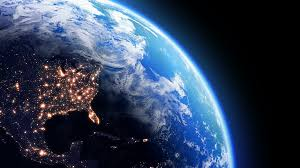
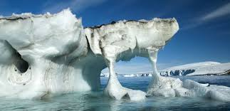
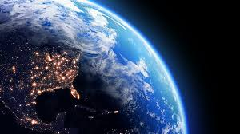
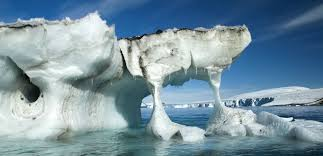
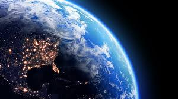
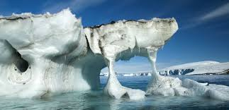

In recent years we have dumped more carbon emissions in the atmosphere than any time in the past. This is
clear and evident by the fact that we have never seen more than 400 ppm on CO2 in the atmosphere. That is
until the industrial revolution. Now post industrial revolution we have seen CO2 no easily surpass 400ppm.
Today our current level is 411ppm. Something we have not seen for at least one million years. Scientist know
what level of CO2 in the atmosphere existed long before written records. They determine this drilling large
ice cores from Artic ice. Some of the air from hundreds of thousands of years ago was frozen in the ice. We
can now analyze that air and determine what levels of CO2 was present during both warm periods and the ice age.
So far it is not looking good for us. Earth is rising in temperature many times faster than is has in the
discoverable past. Please look at the graph provided below to see the rapid rise in CO2 concentration.

A little bit of CO2 in the atmosphere can cause quite a lot of damage. The planet is warming almost exactly like a greenhouse. This is ice all around the world and particularly in Artic regions to melt at unprecedented rates. This has many adverse effects, one of which is the rise in sea level. The rise in sea level will displace millions of people around the world and damage billions of dollars in infrastructure. The Artic ice also acts like a giant mirror putting some of the heat that is warming the planet and putting it back into the cosmos. As the ice melt the mirror that does this will of course decrease in size becoming far less effective than it once was. It is also predicted that all types of weather events will be more severe. Drought may very well plague a large percentage of planet earth. This will undoubtedly cause mass crop death and water shortage.
It is clear that what we as humans have done since the industrial revolution has increased the carbon emissions in the
atmosphere. If you also thing something needs to be done to lower our carbon footprint and to save our lives on this
planet, please navigate to our registration page in order to pledge your support for our cause. Below we have provided
some links to other sources that might interest you.
THANK YOU for your support!